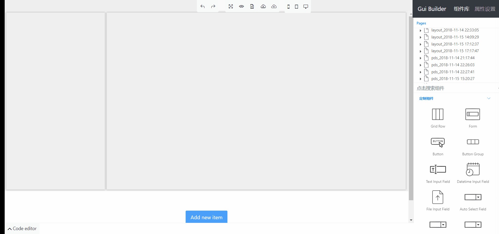

欢迎来到UI Tools文档主页¶ UI Tools是什么¶ UI Tools是一套借助GUI界面帮助开发人员快速创建HTML页面的程序，包含程序版和网页版两个版本。  软件功能¶ 可以进行拖拽改变位置和改变大小的布局块 拖拽组件到布局块 通过设置界面设置组件属性，并预览变化 自动生成通用JavaScript代码 网页版文件树列表保存历史页面 网页版支持导入和导出页面功能 程序版支持左侧文件树展示本地文件列表，监听本地文件变化，实现修改双向同步 网页版¶ 稳定版地址 测试版地址 Credits¶ VvvebJs - 网页版UI界面和组件属性设置 jQuery UI - 拖拽和部分组件依赖 ag-Grid - 表格组件 Bootstrap - 组件样式库 noide - 程序版前端界面和后台实现 Pkg - node项目打包工具 MkDocs - 文档生成工具 Material for MkDocs - 文档主题